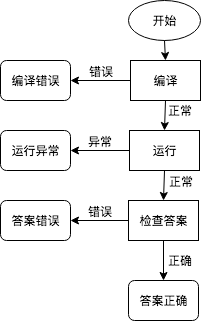
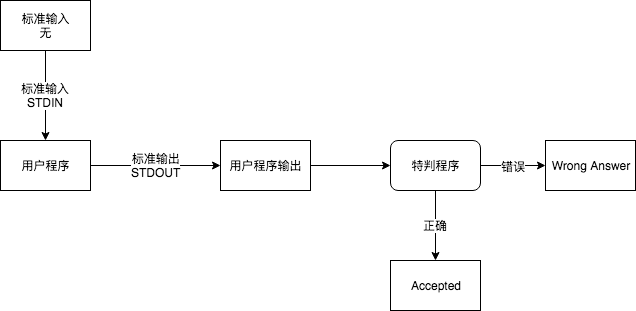
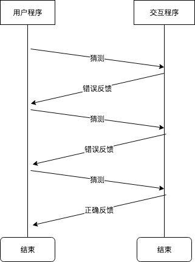

从零开始实现一个 OJ 评测姬。
这一篇里我们介绍一下评测姬的评测流程、评测原理，并使用 C 语言实现一个评测的函数。
评测流程
评测姬的评测流程大概分为编译、运行和答案对比三部分。

其中不同流程中可能出现的错误分别如下：
- 全过程
System Error：评测姬内部错误
- 编译期
Compile Error：编译错误
- 运行期
Runtime Error：运行错误，可能是因为数组越界、指针错误等Time Limit Exceeded：程序运行时间超过限制Memory Limit Exceeded：程序申请内存超过限制Output Limit Exceeded：程序产生了过多的输出
- 答案对比期
Presentation Error：除了空白符（空格、制表符、换行符）外，其他都与标准答案相同。很多 OJ 将这种错误标注为WA，简单起见，我们的评测姬也将PE标注为WAWrong Answer：答案错误
其中每个流程出现问题都会中断评测流程，不会再进入之后的流程。而如果通过了所有的流程，没有出现错误的话，就会获得 Accepted，即 AC。
常见的答案评测方式
OJ 有多种评测方式，这里我们介绍一下主要的答案评测方式。我们要写的评测姬预定只支持基本的标准评测。
标准评测
将用户程序的输出与答案进行逐字节的对比，完全相同则为 AC，否则答案错误。
比如 LOJ 的题目 A + B Problem
用户需要提交一份代码，这份代码编译而成的程序接收两个数字，并输出这两个数字之和。评测姬会重定向文件到用户程序的输入流，以便用户程序直接从 stdin 中获取数据；将用户程序的输出流 stdout 重定向到文件，以进行后续的答案评测。有关重定向的操作，我们将在后面的部分讲解。
对于 1 2 这组输入，用户的程序如果能正确的输出 3，则可以通过测试 AC，否则就会 WA。

Special Judge 特判
运行一个特判程序，这个程序以用户程序的输出为输入，经过特判程序的内部判断后得出用户程序的正确性。
示例是 LOJ 的 Hello, World!，用户提交大小写不限的 Hello, World!，评测姬可以识别答案的正确性。与标准评测不同的是，这个答案可能有多种。hello, world! 和 HELLO, WORLD! 等都会被判断为正确。

Special Judge 的评测程序也可以从标准输出文件中读取数据，标准评测可以认为是一个 Special Judge 的一个特例，只不过特判的程序只能做逐字节的对比。
交互评测
运行一个交互程序，连接交互程序与用户程序的输入输出，交互程序将在内部判断后给出用户程序的正确与否的结果。
示例是 CodeForces 的 Guess the Number，用户的程序需要猜测一个随机的数字的值，每次猜测都会得到反馈（>= 或 <），用户的程序需要在指定的次数内猜出这个数字是多少。当用户程序猜测到正确的数字后，用户程序和交互程序都应该结束，交互程序会给出用户代码评测的结果。

与 Special Judge 的区别是，Special Judge 是在用户程序结束后对其输出进行的检查，而交互评测的程序是与用户程序相联通并且动态评测的，同时用户的程序也需要根据交互程序的输出来调整自己的输出。交互评测比起其他的评测方式来说更复杂，限制也颇多（比如有流缓冲之类的问题），因此实际很少被使用。
标准评测的代码实现
我们要为我们的评测姬实现一个函数，这个函数接收两个参数，分别是用户程序的输出文件和标准输出文件。这个函数会对比两个文件的内容，返回标准评测的结果。
1 | int StdCheck(char *answer_file_name, char *output_file_name) { |
核心代码只有不足 30 行，就可以实现一个简单的标准评测的函数。如果想要额外判断 PE 的话，也可以在这个代码的基础上进行修改。
连同测试一起的函数可以在 GitHub 上查看：https://github.com/MeiK2333/ZeroJudger/tree/master/stdcheck。
总结
本篇我们了解了一下 OJ 的评测流程、常见错误以及出现的位置，了解了几种评测方式，实现了一个简单的标准评测函数。下一篇我将介绍一下如何执行用户提交的代码。